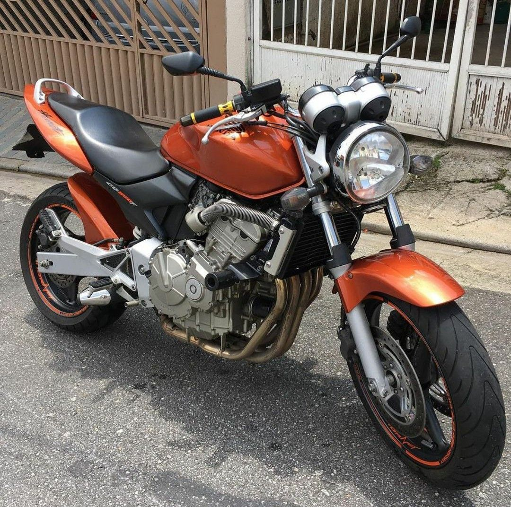
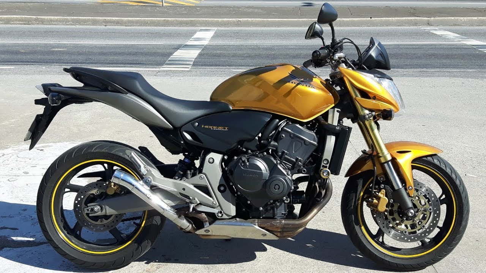
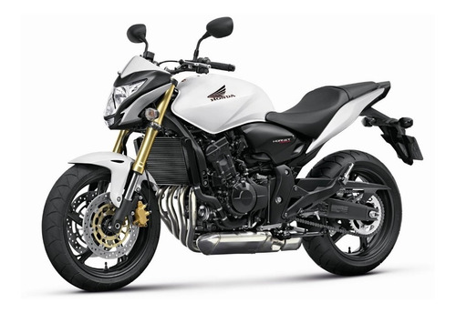

XJ6 - Yamaha
Design esportivo, desempenho empolgante e agilidade total. Torque e potência linear do motor de 4 cilindros, 600cc. Perfeita para o dia a dia ou viagens.
Farol facetado tipo diamante em policarbonato e lâmpada 55w60w. Detalhe da luz de posição.
O painel de instrumentos conta com conta-giros analógico e velocimentro digital. além de diversas funções e luzes espias, incluindo a luz de indicativo do sistema de imobilizador.
Suspenção traseira Monocross conta com sete regulagens. O chassi é do tipo diamante em tubos de aço com as demensões para assegurar uma ótima maneabilidade.
O escapamento 4-2-1 é inovador terminando em uma pequena ponteira localizada sob o motor, onde está alojado o abafador e o catalisador. Concentração da massa e baixo centro de gravidade.
A Yamaha XJ6 é uma motocicleta naked de quatro cilindros, foi vendida no Brasil durante nove anos, sendo substituída pela atual MT-07. A esportiva da marca japonesa foi um dos modelos mais emblemáticos de sua época e uma das opções mais desejáveis, ainda que estivesse numa categoria diferente da famosa Honda CB 600 Hornet.
Ao longo de seu período no Brasil, foram vendidas 21 mil unidades, mas continuou a ser produzida aqui quando já havia saído de linha na Europa. A Yamaha justificou que ainda havia uma boa demanda no mercado interno, por isso, a XJ6 manteve sua presença por mais tempo que o previsto inicialmente.
Bem diferente da popular Hornet, a XJ6 era de uma categoria de 600 cilindradas de baixa potência, na casa dos 80 cavalos, onde havia ainda modelos como a Kawasaki Ninja 650 e Suzuki GSX 650F, por exemplo.
Ficha Tecnica
- Cilindrada: 600
- Tipo de Motor: 4 tempos
- Arrefecimento: Líquido
- Combustível: Gasolina
- Potência Máxima: 77,5cv a 10.000 rpm
- Torque Máximo: 6,08 Kgf.m a 8.500 rpm
- Transmissão: 6 velocidades
- Injeção: Eletrônica
- Suspensão dianteira: Garfo telescópico / 130 mm
- Partida: Elétrica
- Chassi: Tubular em aço – tipo “Diamond”
- Suspensão traseira: Braço oscilante – monocross / 42 mm
- Comprimento: 2120
- Largura: 770
- Altura: 1085
- Altura do Banco: 785
- Distância entre Eixos: 1440
- Pneu Dianteiro: 120/70 – ZR17 M/C 58W
- Pneu Traseiro: 160/60 – ZR17M/C 69W
- Capacidade do tanque: 17
- Balança: Convencional
Hornet - Honda
São muitas as motos Honda que conquistaram um lugar na história, um carinho especial dos fãs de motocicletas. Porém, algumas delas extrapolaram limites, sendo reverenciadas como verdadeiras lendas sobre rodas. Entre estas, a Honda CB 600F Hornet.
Lançada no Brasil em dezembro de 2004, a CB 600F Hornet imediatamente conquistou um público eclético, atraindo fãs das superesportivas por seu desempenho – a velocidade máxima da Hornet superava os 200 km/h –, e também aqueles desinteressados em performance, mas atraídos pelo design inspirado, agressivo, cuja característica mais peculiar era a ponteira do escape 4 em 1 alta, saindo à direita da rabeta.
A naked da Honda era realmente especial: o motor, herdado da superesportiva CBR 600F, foi ligeiramente suavizado, mas mesmo assim na ficha técnica exibia bons 96,5 cv de potência máxima, praticamente o dobro da potência de outro sucesso da Honda da época, a CB 500.
Potente, mas não arisca, poderosa, mas não brutal, a CB 600F Hornet era fácil de pilotar, extremamente ágil, tinha freios e suspensões excelentes e custava menos que suas concorrentes. Fora isso, o consumo da Hornet era contido para uma moto tão potente.
Exatas 47.832 unidades da Hornet foram vendidas no Brasil do final de 2004 até o final de 2014, ano em que cessou sua produção em Manaus, AM. Todas as gerações do modelo são alvo de grande admiração, o que faz das Hornet motos com alto valor de revenda, cobiçadíssimas, que conquistaram status de objeto de coleção, o que faz jus à excelência de seu projeto.
Ficha Tecnica
- Motor: 4 tempos / 4 cilindros / 16V DOHC / 599,3 cc / refrigerado a água
- Alimentação: injeção eletrônica PGM-FI
- Ignição: eletrônica
- Partida: elétrica
- Potência (cv a rpm): 102 a 12000
- Torque (mkgf a rpm): 6,53 a 10500
- Câmbio: 6 marchas, transmissão final por corrente
- Chassi: tipo Diamond, de alumínio
- Suspensão Dianteira: garfo telescópico hidráulico invertido Traseira: balança articulada tipo link de amortecimento hidráulico e mola helicoidal
- Freios Dianteiro: disco flutuante duplo de 296 mm, com pinça de 4 pistões opostos Traseiro: disco simples de 240 mm e pinça deslizante de pistão simples
- Pneus Dianteiro: 120/70 – 17 Traseiro: 180/55 – 17
- Comprimento (cm): 208,5
- Altura/largura (cm): 109/76
- Entre-eixos (cm): 143,5
- Peso: (kg) 173 / 177 (ABS)
- Vão-livre (cm): 13,5
- Altura do assento (cm): 80,4
- Tanque: 19L
- Desempenho: 0-100 km/h (s) 3,93 S
- Consumo esportivo: (km/l) 18,4
- Consumo econômico: (km/l) 29,7
-

Primeira geração (2005 - 2007) - Hornet Carburada
-

Segunda geração (2008 - 2011) - Hornet
-

Terceira geração (2012 - 2014) - Hornet